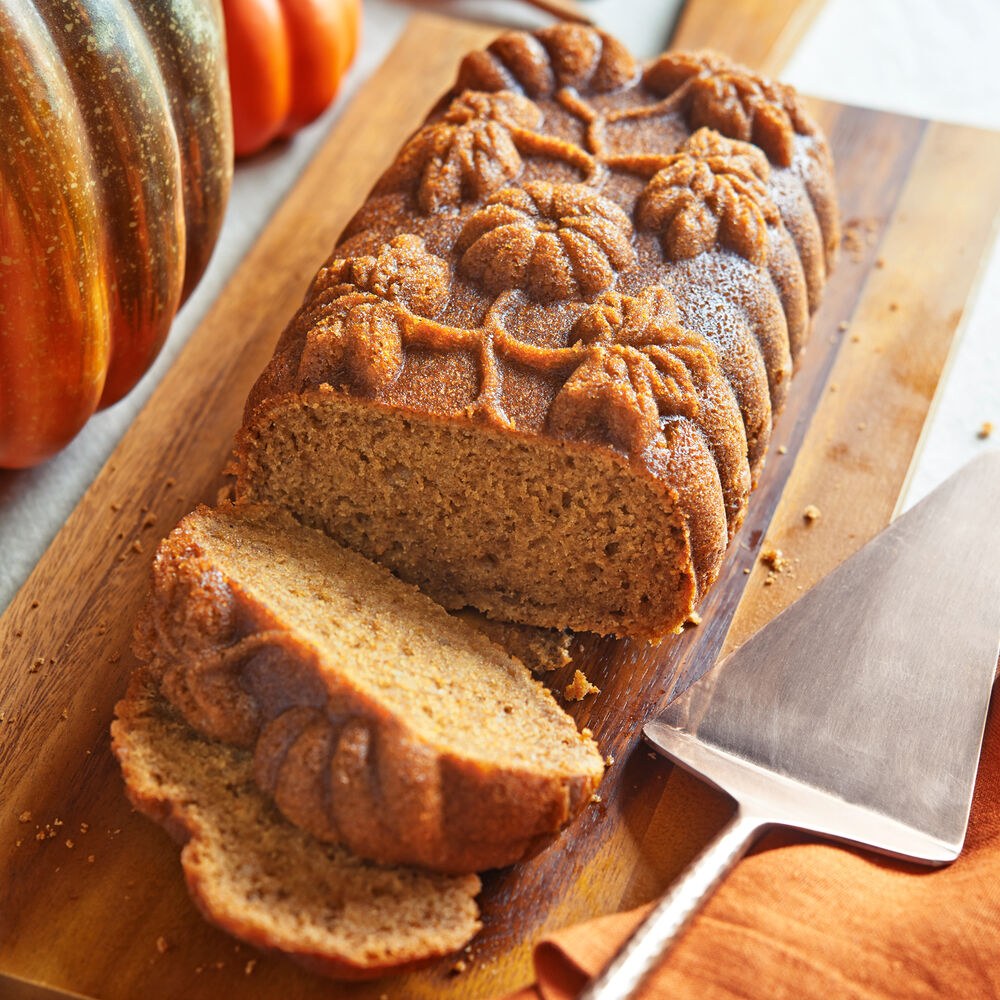

Spiced Pumpkin Bread

A pumpkin loaf spiced with cinnamon, ground cloves, and nutmeg
Oven baked bread that comes out soft and moist. Uses cinnamon, ground cloves, and nutmeg.
Ingredients
- White sugar 1 1/2 cups
- Light brown sugar 1 cup
- Melted butter 1 cup
- Eggs 2
- Vanilla Extract 1 tbsp
- Pumpkin puree 3 cups
- AP Flour 4 cups
- Ground cinnamon 2 tbsps
- Baking powder 1 tbsp
- Baking soda 1 tbsp
- Ground nutmeg 1 tsp
- Ground cloves 1/2 tsp
- Salt 1/2 tsp
Steps
- Preheat oven to 350 degrees F (175 degrees C).
- Mix white sugar, brown sugar, and melted butter together in a large bowl. Stir in eggs and vanilla extract; mix in pumpkin until thoroughly combined.
- Whisk flour, cinnamon, baking powder, baking soda, nutmeg, cloves, and salt together in a separate bowl. Mix flour mixture into pumpkin mixture until incorporated. Pour batter into three 5x9-inch loaf pans. Smooth batter evenly in each pan.
- Bake in the preheated oven until a toothpick inserted in the middle of each loaf comes out clean, 45 to 50 minutes.